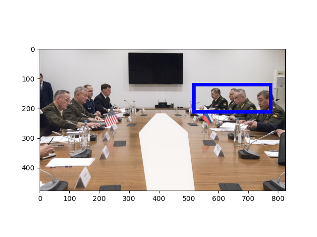
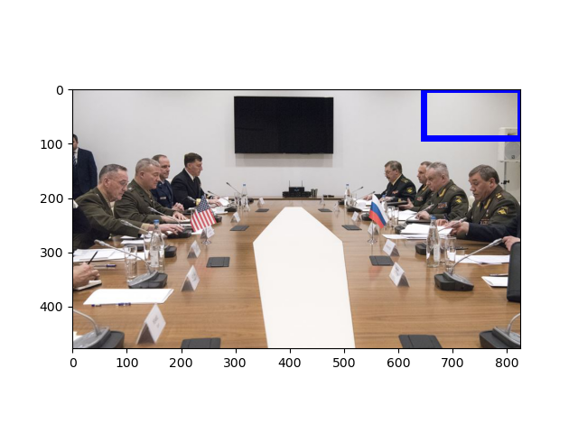
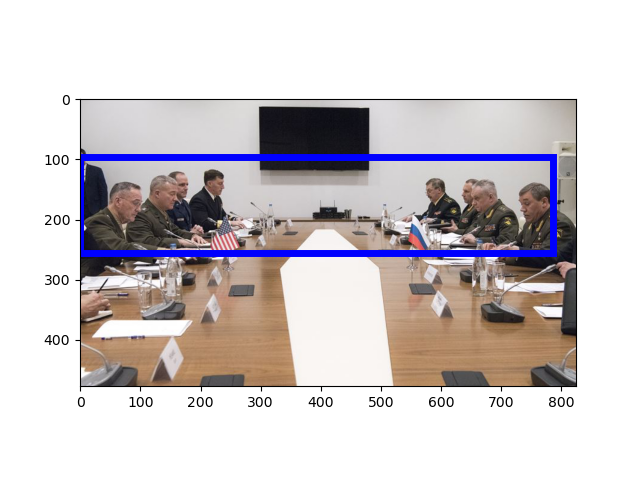
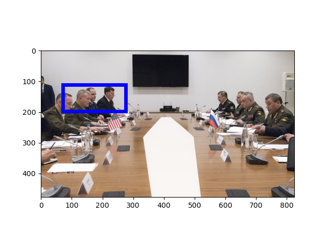
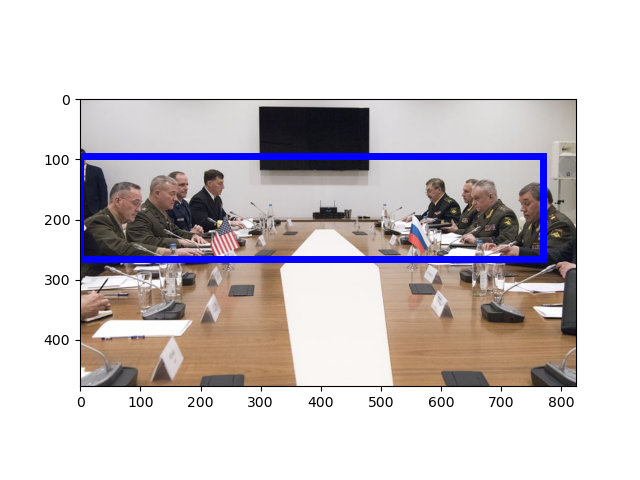

[Raw Text]: Chairman of the U.S. Joint Chiefs of Staff Gen. Joseph Dunford meets with Army Gen. Valeriy Gerasimov, Russia’s chief of the General Staff of the Armed Forces and first deputy minister of defense, in Baku, Azerbaijan, Feb. 16, 2017. (Photo - U.S. Department of Defense)
======================================================================
Mention: http://www.isi.edu/gaia/entities/uiuc/VOA_EN_NW_2017_02_16_3727822_1/EN_Entity_EDL_0000389
---- VOA_EN_NW_2017_02_16_3727822_1:79-81 Chairman of the U . S . Joint Chiefs of Staff Gen . Joseph Dunford meets with Army Gen . Valeriy Gerasimov , Russia ’ s chief of the General Staff of the Armed Forces and first deputy minister of defense , in Baku , Azerbaijan , Feb . 16 , 2017 .
---- VOA_EN_NW_2017_02_16_3727822_1:112-116 Chairman of the U . S . Joint Chiefs of Staff Gen . Joseph Dunford meets with Army Gen . Valeriy Gerasimov , Russia ’ s chief of the General Staff of the Armed Forces and first deputy minister of defense , in Baku , Azerbaijan , Feb . 16 , 2017 .
---- VOA_EN_NW_2017_02_16_3727822_1:84-100 Chairman of the U . S . Joint Chiefs of Staff Gen . Joseph Dunford meets with Army Gen . Valeriy Gerasimov , Russia ’ s chief of the General Staff of the Armed Forces and first deputy minister of defense , in Baku , Azerbaijan , Feb . 16 , 2017 .
Image:
GroundingConfidence: http://www.columbia.edu/AIDA/DVMM/Entities/GroundingBox/RUN00006/JPG/VOA_EN_NW_2017_02_16_3727822_1/3, 0.3050459

GroundingConfidence: http://www.columbia.edu/AIDA/DVMM/Entities/GroundingBox/RUN00006/JPG/VOA_EN_NW_2017_02_16_3727822_1/4, 0.3050459

GroundingConfidence: http://www.columbia.edu/AIDA/DVMM/Entities/GroundingBox/RUN00006/JPG/VOA_EN_NW_2017_02_16_3727822_1/1, 0.378763

GroundingConfidence: http://www.columbia.edu/AIDA/DVMM/Entities/GroundingBox/RUN00006/JPG/VOA_EN_NW_2017_02_16_3727822_1/2, 0.3050459

Event:
======================================================================
Mention: http://www.isi.edu/gaia/entities/uiuc/VOA_EN_NW_2017_02_16_3727822_1/EN_Entity_EDL_0000387
---- VOA_EN_NW_2017_02_16_3727822_1:43-45 Chairman of the U . S . Joint Chiefs of Staff Gen . Joseph Dunford meets with Army Gen . Valeriy Gerasimov , Russia ’ s chief of the General Staff of the Armed Forces and first deputy minister of defense , in Baku , Azerbaijan , Feb . 16 , 2017 .
---- VOA_EN_NW_2017_02_16_3727822_1:48-61 Chairman of the U . S . Joint Chiefs of Staff Gen . Joseph Dunford meets with Army Gen . Valeriy Gerasimov , Russia ’ s chief of the General Staff of the Armed Forces and first deputy minister of defense , in Baku , Azerbaijan , Feb . 16 , 2017 .
---- VOA_EN_NW_2017_02_16_3727822_1:0-7 Chairman of the U . S . Joint Chiefs of Staff Gen . Joseph Dunford meets with Army Gen . Valeriy Gerasimov , Russia ’ s chief of the General Staff of the Armed Forces and first deputy minister of defense , in Baku , Azerbaijan , Feb . 16 , 2017 .
Image:
GroundingConfidence: http://www.columbia.edu/AIDA/DVMM/Entities/GroundingBox/RUN00006/JPG/VOA_EN_NW_2017_02_16_3727822_1/5, 0.4950561

Event:
======================================================================